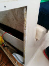
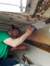
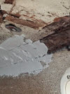
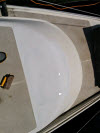
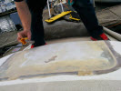
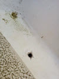

This weeks chapter - Fill 'er up!
So lots of new things. First, my brother came to town. He's an accomplished wood worker and has lot of experience with many different materials. I knew he'd be the guy to ask about some of the issues I've been having. The first thing that was bugging me was where the plywood split on the cabinet. I had previously tried to fix it with wood glue and clamps, but I didn't have any luck. My brothers suggestion was to use Gorilla glue instead. It worked like a charm!
{kind=link}
Then we got to work on the rest. The rough state of the inside has been bothering me for a while. Even though it's only cosmetic, it's a real eye sore and I could come to terms with how to deal with it. I knew that gelcoat would be the answer once I had a smooth surface, but I wasn't sure how smooth the surface had to be, or how to deal with the large gaps. The two of us browsed West Marine until we found some waterproof boat filler. Now this may be a scam, and it could be that this is the exact same as regular autobody filler, but I didn't want to take the chance. We sanded and chiselled off some of the old epoxy. Then we mixed up a batch and tried it out. The first batch didn't have enough hardener in it, and took a long time to set. Consequently, it also sagged a bit. This part will require a bit of sanding. We did another test on the opposite side and used more hardener. This side worked well. We didn't have a proper respirator, so we both called it quits once the dizziness set in.
{kind=link}

This is from the side that didn't set properly. You can see the sagging in the center where there were deep holes.
{kind=link}
For a breath of fresh air, we decided to try out the gelcoat we bought. The BUP (Big Ugly Patch) had started to peel a bit, and there was some plywood exposed. We (and by we I mean my brother), sanded it down far past the patch, and painted the gelcoat on with a brush. The new gelcoat looks great, but there are some minor brush lines in it. Also, it needs at least another coat in order to make it opaque. This time I'll do it with a foam roller rather then a brush. On the downside, we now have a big bright white patch that stands out. It's good incentive to paint the rest of her I guess. We used the left over gelcoat to try to paint the exposed wood on the part of the anchor well that is visible from the inside.
{kind=link}
{kind=link}
There was one other small issue. A spot that had been drilled out for some reason, and patched. However, the patch had started to leak. I drilled it out and there was a lot of moisture in the wood. I picked it out as good as I could with a small flathead screw driver. Then I let it dry out for an hour or so (not really long enough, but it was threatening to rain). I taped the bottom of the hole, mixed up some two part epoxy and filled it. I wish I had a syringe though, as it was a bit of a chore forcing the thick epoxy into the hole. Anyway, I think I managed to fill it well. Next I'll sand off the top and apply some more gelcoat. You can see below that I gouged out the little cracks that were starting to form. Off to a good start!
{kind=link}